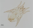
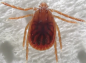

2024年
問題169 ダニに関する次の記述のうち，最も不適当なものはどれか．
（1）ヒゼンダニは，ヒトの皮下に内部寄生するダニ類として知られている．
（2）ヤケヒョウヒダニは，アレルゲンとなることが知られている．
（3）カベアナタカラダニは，ヒトを刺さない．
（4）ミナミツメダニは，捕食性のダニである．
（5）マダニの顎体部には，脚が付属している．
2024年
問題169 正解（5） 頻出度AAA
ダニの脚は胴体部に付いている．
ダニの種類と生態についてはつぎのとおり．
2024-169-1表 主なダニの種類
| 種類 | 名称 | 被害 | 備考 |
| 動物寄生性の ダニ |
イエダニ | 吸血 | ネズミに寄生する． |
| スズメサシダニ トリサシダニ ワクモ |
吸血 | スズメなどの野鳥やニワトリに寄生する．軒下などに営巣した野鳥の巣から室内に入りこむ．トリサシダニやスズメサシダニの被害は，野鳥の巣立ちの時期に集中する． | |
| マダニ | 吸血 | マダニ類は飼い犬が宿主になって庭先で発生することがある．マダニ類は雌雄とも，幼虫，若虫，成虫の全ての発育段階で吸血する．マダニは，第1脚の先端部分に温度や炭酸ガスを感知する器官をもち，吸血源動物が近づいてくるのを，植物の葉の先端部で待ち構えている． | |
| シラミダニ | 刺咬 | シラミダニはカイコに寄生する．偶発的に人を刺すが吸血はしない． | |
| 肉食性のダニ | ツメダニ | 刺咬 | ツメダニは他のダニやチャタテムシを捕食するが，動物吸血性ではない．まれに人を刺す． |
| 屋内塵性のダニ | ヒョウヒダニ類 コナダニ類 ホコリダニ類 |
アレルゲン | ヒョウヒダニ類が優占種である． ケナガコナダニは新しい畳に大量発生して不快感を与える．保存食品からも発生する． これらのダニの発生は多分に温湿度依存的で，25℃以上，60％以上の湿度でよく発生する．長期の乾燥状態には耐えられない． |
| 植物由来のダニ | ハダニ類 | 不快感 | ヒメハダニなどが鉢植の花などとともに建築物内に持ち込まれ，屋内でも発見される．ハダニ類は赤，黄系の派手な色の種類が多く，不快感を起こすがヒトを刺すことはない． |
| カベアナタカラダニ | 不快感 | 春季にビルの外壁面を赤くするほど集団発生することがある．室内に侵入することもあるが，人への直接的な被害は及ぼさない． | |
| 人寄生性のダニ | ヒゼンダニ | 疥癬症 | ヒトの皮膚に内部寄生し，疥癬症を起こす．その寄生数が爆発的に増加すると，｢角化型疥癬｣と呼ばれ，ヒトからヒトヘの感染力も増し，高齢者施設や病院での集団発生が問題となる． |
「ダニの生態」については次のとおり．
ダニの体は，口器がある顎体部と，頭，胸，腹が融令した胴体部の2つに分かれていて，はっきりした頭部はなく，触覚も持たない（2024-169-1図，2024-169-2図，参照）．
ダニは分類学的にはクモに近く昆虫ではない．卵→幼虫→若虫→成虫と成長する．幼生では脚は3対，若生，成虫で4対である．
2024-169-1図 ヤケヒョウヒダニ
2024-169-2図 フタトゲチマダニ


出典 さいたま市健康科学研究センター
hhttps://www.city.saitama.lg.jp/sciencenavi/kenkou/003/p041407.html
出典 京都市情報館
https://www.city.kyoto.lg.jp/hokenfukushi/page/0000240343.html